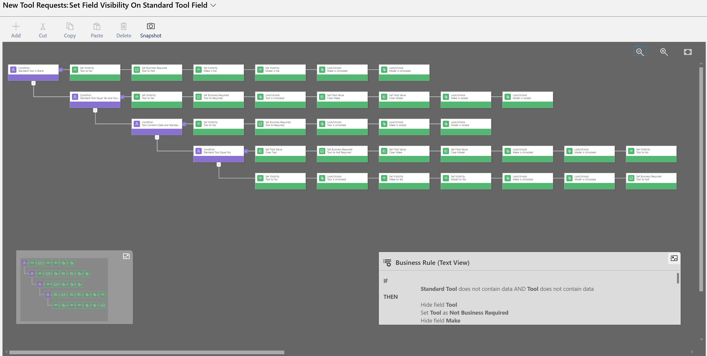

Project Summary
This project highlights a business rule created for the New Tool Requests table in a model-driven app. The rule controls field visibility, required fields, locked fields, and cleared values based on whether the request is for a standard tool or a custom/manual tool entry.
Business Rule Designer
The business rule uses multiple conditions to guide the user through the correct form experience. Depending on the values entered, the form either shows the Tool lookup field or allows the user to manually enter Make and Model information.

Standard Tool Logic
If Standard Tool is set to Yes, the Tool lookup is shown and required. Make and Model are cleared and locked so the user selects an existing standardized tool record instead of manually typing values.
Custom Tool Logic
If Standard Tool is set to No, the Tool lookup is cleared, hidden, and no longer required. Make and Model are shown and unlocked so the user can manually enter the tool information.
Form Cleanup and Data Quality
The rule clears values when users switch between standard and custom tool paths. This prevents conflicting data, such as having both a selected standard tool and manually entered Make and Model values on the same request.
Business Impact
This business rule improves the New Tool Request process by guiding users through the correct data entry path. It reduces bad data, prevents unnecessary fields from appearing, and makes the form easier to complete without requiring custom JavaScript.
Skills Demonstrated
Model-driven app business rules, Dataverse form logic, conditional branching, field visibility, field requirement settings, field locking and unlocking, value clearing, user experience design, and data quality enforcement.